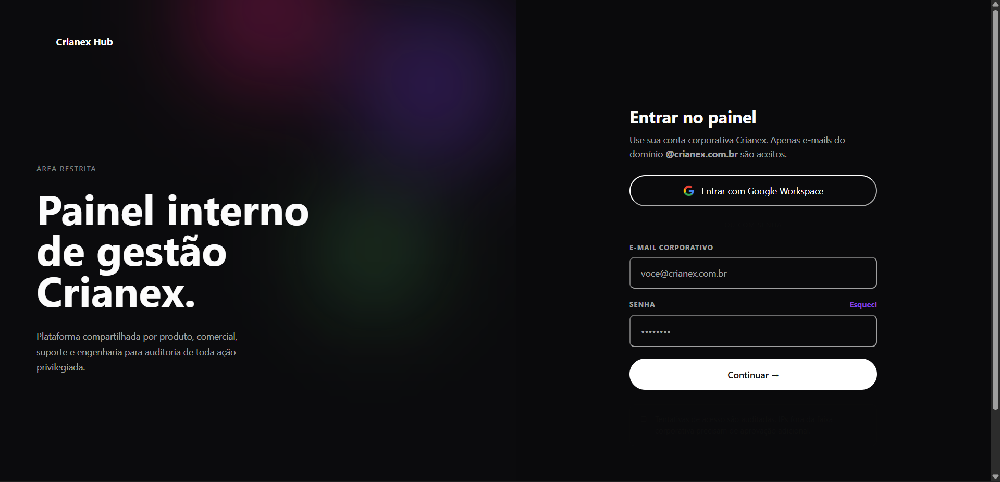
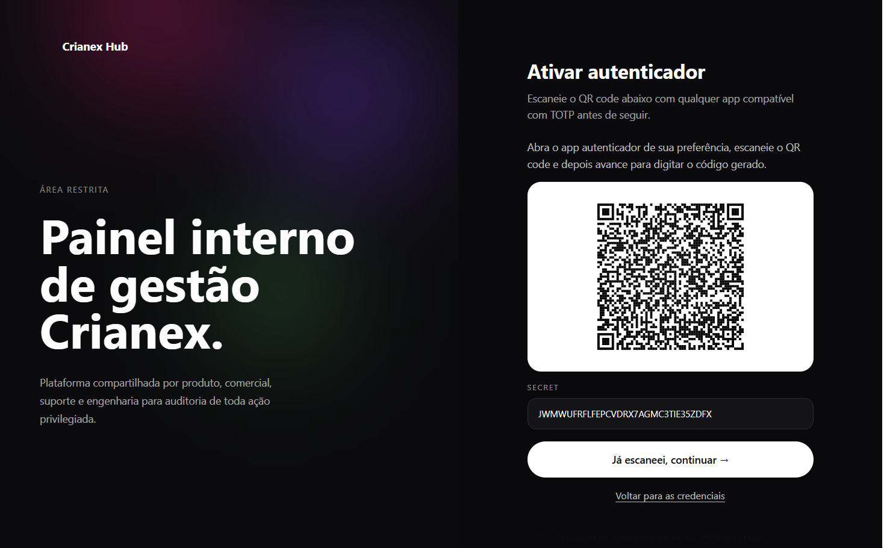
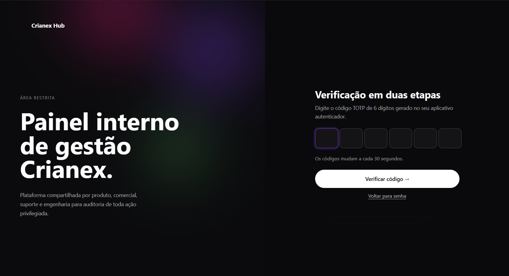

IT1 — Features Entregues¶
Histórico de Revisão¶
| Versão | Data | Descrição | Autor(es) |
|---|---|---|---|
| 1.0 | 06/06/2026 | Criação do documento | Lucas Z. |
| 1.1 | 06/06/2026 | Adicionei os diagramas de sequência formal | Lucas Z. |
Registro das features entregues na IT1 — Vitrine Pública (28/04 – 25/05). Para cada feature estão reservados espaços para evidências de funcionamento, validação do cliente e rastreabilidade de PRs/issues.
CP5 — Painel de Gerenciamento do Administrador¶
F09 — Autenticar administradores¶
Issues: #54
RFs cobertos: RF08, RF09
RNFs cobertos: RNF01, RNF03
Diagrama de Sequência Formal¶
Critérios de Aceite Atendidos¶
| Critério (BDD) | RF / RNF | Status |
|---|---|---|
Login com credenciais válidas → Supabase Auth gera sessão JWT → redirect /admin/dashboard |
RF08 | ✅ |
| MFA ativo → código TOTP solicitado antes de emitir sessão | RF08 · RNF08 | ✅ |
| Credenciais inválidas → 401 + mensagem genérica sem expor detalhes internos | RF08 | ✅ |
Logout → signOut() + invalida refresh_token + limpa cookie + redirect /admin/login |
RF09 | ✅ |
Acesso a /admin sem sessão → redirect /admin/login sem renderizar dados do painel |
RF09 · RNF01 | ✅ |
| Tempo de autenticação ≤ 2s | RNF03 | ✅ |
Evidências de Funcionamento¶
Tela de Login

Autenticação de Dois Fatores (2FA)
Após inserir as credenciais, o usuário escaneia o QR Code no aplicativo autenticador e digita o código TOTP gerado.


Validação do Cliente¶
| Tipo | Data | Resultado | Observação |
|---|---|---|---|
| Partial Validation | — | ✅ | — |
| Formal Validation | — | ⬜ | — |
Observações¶
- Sessão gerenciada inteiramente pelo Supabase Auth; token armazenado em cookie
httpOnly(nãolocalStorage) para mitigar XSS. - Erro 401 retorna mensagem genérica intencionalmente — não diferencia "e-mail inexistente" de "senha errada", prevenindo enumeração de usuários.
- MFA via TOTP (RFC 6238): o QR Code é gerado pelo Supabase Auth SDK no cliente e não trafega pelo backend da aplicação.
F10 — Acessar painel administrativo¶
Issues: #57
RFs cobertos: RF10
RNFs cobertos: RNF01, RNF03, RNF09
Diagrama de Sequência Formal¶
Critérios de Aceite Atendidos¶
| Critério (BDD) | RF / RNF | Status |
|---|---|---|
JWT válido com role = owner → RLS filtra por auth.uid() + auth.role() → painel renderizado sem reload |
RF10 · RNF09 | ⬜ |
JWT expirado → refreshSession() tentado; se falhar, redirect /admin/login sem renderizar dados |
RF10 | ⬜ |
Token inválido ou sem role = owner → 401/403 + redirect /admin/login sem expor estrutura |
RF10 · RNF01 | ⬜ |
| Operação no painel → resposta entregue em ≤ 2s em condições normais | RNF03 | ⬜ |
Evidências de Funcionamento¶
Evidências a serem adicionadas.
Validação do Cliente¶
| Tipo | Data | Resultado | Observação |
|---|---|---|---|
| Partial Validation | — | ⬜ | — |
| Formal Validation | — | ⬜ | — |
Observações¶
- RLS do Supabase opera como segunda camada de autorização; validação de
role = ownerno Express é a primeira — defesa em profundidade intencional. - O refresh automático de token é tratado no hook
+layout.server.tsdo SvelteKit, transparente ao usuário. - Redirecionamento ao expirar a sessão ocorre sem flash de conteúdo protegido: o guard corre no servidor antes de qualquer renderização.
F11 — Gerenciar membros da Crianex¶
Issues: #58
RFs cobertos: RF11, RF12, RF13, RF14
RNFs cobertos: RNF03, RNF09
Diagrama de Sequência Formal¶
Critérios de Aceite Atendidos¶
| Critério (BDD) | RF / RNF | Status |
|---|---|---|
Owner cadastra novo membro → createUser() + insert em profiles → lista atualizada sem reload |
RF12 | ⬜ |
| Email duplicado → erro informativo sem criar registro duplicado | RF12 | ⬜ |
Owner edita dados de membro → RLS valida role = owner → persiste sem reload |
RF11 · RNF09 | ⬜ |
Edição sem role = owner → bloqueio 403 pelo RLS sem persistir nada |
RF11 · RNF09 | ⬜ |
Owner inativa membro → active = false + lista atualizada sem reload |
RF13 | ⬜ |
| Owner tenta inativar a própria conta → operação bloqueada com mensagem de erro | RF13 | ⬜ |
Owner remove membro → deleteUser() + remoção de profiles → lista atualizada sem reload |
RF14 | ⬜ |
| Owner tenta remover a própria conta → bloqueado (ao menos um owner ativo garantido) | RF14 | ⬜ |
Evidências de Funcionamento¶
Evidências a serem adicionadas.
Validação do Cliente¶
| Tipo | Data | Resultado | Observação |
|---|---|---|---|
| Partial Validation | — | ⬜ | — |
| Formal Validation | — | ⬜ | — |
Observações¶
- Criação de usuário usa
supabase.auth.admin.createUser()com service role — senha inicial gerada aleatoriamente e enviada por e-mail pelo Supabase. - A proteção contra auto-inativação/auto-remoção compara o
uiddo token com oidalvo na camada Express, evitando lockout acidental do único owner. - Deleção remove o registro em
profilese em seguida chamaadmin.deleteUser()— operação irreversível; soft-delete viaactive = falseestá disponível para desativação temporária.
CP4 — Vitrine Pública de Produtos SaaS¶
F12 — Exibir catálogo de produtos SaaS¶
Issues: #55
RFs cobertos: RF21, RF22, RF23
RNFs cobertos: RNF02, RNF06, RNF21
Diagrama de Sequência Formal¶
Critérios de Aceite Atendidos¶
| Critério (BDD) | RF / RNF | Status |
|---|---|---|
| Admin cadastra produto → persistido em transação ACID → apto para publicação | RF21 · RNF06 | ⬜ |
| Admin edita produto → dados substituídos no banco sem intervenção de dev | RF22 | ⬜ |
| Admin remove produto → excluído do catálogo e ausente na vitrine imediatamente | RF23 | ⬜ |
| Requisição sem autorização → 401/403 sem executar operação no banco | RF21–23 · RNF01 | ⬜ |
Vitrine pública renderiza via SSR → apenas published = true em ≤ 2s sem JS |
RNF02 · RNF21 | ⬜ |
| Falha no banco → ROLLBACK completo sem registro parcial | RNF06 | ⬜ |
Evidências de Funcionamento¶
Evidências a serem adicionadas.
Validação do Cliente¶
| Tipo | Data | Resultado | Observação |
|---|---|---|---|
| Partial Validation | — | ⬜ | — |
| Formal Validation | — | ⬜ | — |
Observações¶
- A vitrine usa SSR via
load()em+page.server.tsdo SvelteKit — nenhum JS necessário no cliente para renderizar os cards de produto. - O campo
publishedfiltra em nível de query; RLS não restringe leitura pública de produtos, apenas escrita/atualização (sem autenticação para visualizar). - Upload de assets (imagens dos produtos) não estava no escopo desta feature — tratado como extensão futura do painel admin.
F13 — Publicar / despublicar produto SaaS¶
Issues: #56
RFs cobertos: RF25, RF26
RNFs cobertos: RNF03
Diagrama de Sequência Formal¶
Critérios de Aceite Atendidos¶
| Critério (BDD) | RF / RNF | Status |
|---|---|---|
Admin aciona toggle para publicar → published = true + confirmação visual em ≤ 2s |
RF25 · RNF03 | ⬜ |
| Admin aciona toggle para despublicar → produto ocultado da vitrine, dados preservados no banco | RF26 · RNF03 | ⬜ |
| Credenciais inválidas no toggle → API rejeita → toggle revertido + mensagem de erro | RF25 · RF26 | ⬜ |
Evidências de Funcionamento¶
Evidências a serem adicionadas.
Validação do Cliente¶
| Tipo | Data | Resultado | Observação |
|---|---|---|---|
| Partial Validation | — | ⬜ | — |
| Formal Validation | — | ⬜ | — |
Observações¶
- Toggle implementado com atualização otimista no cliente: estado muda imediatamente na UI e é revertido em caso de erro da API.
- Operação é um
PATCHde flag booleana — sem transação multi-tabela, portanto sem risco de estado parcial no banco. - Decisão de escopo: despublicar preserva todos os dados e mídias do produto; remoção permanente é ação separada (RF23) para evitar perda acidental.
F14 — Formulário de contato¶
Issues: #61
RFs cobertos: RF27
RNFs cobertos: RNF06, RNF10
Diagrama de Sequência Formal¶
Critérios de Aceite Atendidos¶
| Critério (BDD) | RF / RNF | Status |
|---|---|---|
| Formulário válido → persistido em transação ACID → alerta de sucesso em ≤ 2s | RF27 · RNF02 · RNF06 | ⬜ |
| Rate limit excedido (5 req/IP/10min) → 429 + "Tente novamente mais tarde" | RNF10 | ⬜ |
| Falha no banco → ROLLBACK completo sem registro parcial | RNF06 | ⬜ |
Evidências de Funcionamento¶
Evidências a serem adicionadas.
Validação do Cliente¶
| Tipo | Data | Resultado | Observação |
|---|---|---|---|
| Partial Validation | — | ⬜ | — |
| Formal Validation | — | ⬜ | — |
Observações¶
- Rate limit de 5 req/IP/10min implementado via
express-rate-limitcomo middleware, antes de qualquer validação de payload — bloqueia bots antes de tocar no banco. - Campos opcionais (telefone, empresa) não incluídos no MVP — escopo deliberadamente mínimo para IT1.
- Leads salvos na tabela
leadssem vínculo com contas de usuário; integração com o CRM (CP1) está prevista para IT2.
F15 — Página institucional (Sobre a Crianex)¶
Issues: #63
RFs cobertos: RF28
RNFs cobertos: RNF02, RNF21
Diagrama de Sequência Formal¶
Critérios de Aceite Atendidos¶
| Critério (BDD) | RF / RNF | Status |
|---|---|---|
Visitante acessa /sobre → SSR carrega i18n estático em ≤ 2s sem chamada a API ou banco |
RF54 · RNF02 · RNF04 | ⬜ |
Visitante clica "EN" → textos trocam para en/about.json em ≤ 1 clique sem reload |
RNF13 | ⬜ |
| Bot de indexação → HTML inicial com h1, textos e metadados Open Graph sem depender de JS | RNF04 · RNF21 | ⬜ |
| Visitante sem autenticação → nenhum guard intercepta → conteúdo exibido normalmente | RNF20 | ⬜ |
Evidências de Funcionamento¶
Evidências a serem adicionadas.
Validação do Cliente¶
| Tipo | Data | Resultado | Observação |
|---|---|---|---|
| Partial Validation | — | ⬜ | — |
| Formal Validation | — | ⬜ | — |
Observações¶
- Todo conteúdo carregado de arquivos JSON estáticos em
src/lib/i18n/— zero chamadas a banco ou API, tempo de carregamento depende apenas do SSR. - Troca de idioma reativa via Svelte store; locale persiste em
localStorageentre navegações. - Metadados Open Graph gerados no
+page.server.ts; sem<svelte:head>dinâmico no cliente, garantindo indexabilidade independente de JS.
CP6 — FAQ e Base de Conhecimentos por Produto¶
F16 — CRUD de artigos de FAQ¶
Issues: #59
RFs cobertos: RF30, RF29, RF30, RF31
RNFs cobertos: RNF01, RNF04, RNF05
Diagrama de Sequência Formal¶
Critérios de Aceite Atendidos¶
| Critério (BDD) | RF / RNF | Status |
|---|---|---|
| Admin cadastra artigo (título, conteúdo, produto, categoria) → persistido e apto para publicação | RF28 · RNF01 | ⬜ |
| Admin edita artigo → dados substituídos, ID original preservado | RF29 | ⬜ |
| Admin remove artigo → excluído do banco e ausente na vitrine imediatamente | RF30 | ⬜ |
Admin categoriza artigo → vínculos product_id + category_id com integridade referencial |
RF31 | ⬜ |
| Agente externo forja requisição sem token → RLS bloqueia com 403 sem alterar dados | RNF01 · RNF09 | ⬜ |
| Artigos publicados → conteúdo no SSR indexável; despublicados ausentes da resposta SSR | RNF04 · RNF05 | ⬜ |
Evidências de Funcionamento¶
Evidências a serem adicionadas.
Validação do Cliente¶
| Tipo | Data | Resultado | Observação |
|---|---|---|---|
| Partial Validation | — | ⬜ | — |
| Formal Validation | — | ⬜ | — |
Observações¶
- Artigos criados com
published = falsepor padrão — publicação é ação explícita separada (F17), evitando publicação acidental. - Integridade referencial entre
faq_articles,productsefaq_categoriesgarantida por FK no banco; deleção em cascata não habilitada — artigos com produto/categoria inexistente retornam erro informativo. - RLS bloqueia acesso direto ao Supabase sem passar pelo Express, dupla validação intencional reforçando RNF01.
F17 — Publicar / despublicar artigo de FAQ¶
Issues: #60
RFs cobertos: RF34, RF33
RNFs cobertos: RNF01, RNF04, RNF05
Diagrama de Sequência Formal¶
Critérios de Aceite Atendidos¶
| Critério (BDD) | RF / RNF | Status |
|---|---|---|
Admin publica artigo → published = true → visível na próxima requisição da vitrine sem reload |
RF32 · RNF01 | ⬜ |
| Admin despublica artigo → artigo ausente da vitrine imediatamente, conteúdo preservado no banco | RF33 | ⬜ |
| Agente externo forja requisição sem token → RLS bloqueia com 403 sem alterar status | RNF01 · RNF09 | ⬜ |
| Artigo publicado → conteúdo e metadados SEO no HTML inicial sem depender de JS | RNF04 · RNF05 | ⬜ |
Evidências de Funcionamento¶
Evidências a serem adicionadas.
Validação do Cliente¶
| Tipo | Data | Resultado | Observação |
|---|---|---|---|
| Partial Validation | — | ⬜ | — |
| Formal Validation | — | ⬜ | — |
Observações¶
- Mesmo padrão de toggle otimista da F13 — consistência intencional na UX do painel admin.
- Despublicar artigo não afeta avaliações já registradas; histórico de ratings preservado para análise futura (Dashboard CP3/IT3).
- A vitrine recarrega artigos publicados a cada requisição SSR; não há cache CDN configurado nesta iteração.
F18 — Avaliação de artigos de FAQ¶
Issues: #62
RFs cobertos: RF34
RNFs cobertos: RNF02, RNF04, RNF05
Diagrama de Sequência Formal¶
Critérios de Aceite Atendidos¶
| Critério (BDD) | RF / RNF | Status |
|---|---|---|
| Visitante clica "Útil" ou "Não Útil" → avaliação persistida anonimamente + feedback visual em ≤ 2s | RF34 · RNF02 | ⬜ |
| Visitante já avaliou o artigo na sessão → interface bloqueia sem chamar a API | RF34 | ⬜ |
session_hash já existe no banco para o artigo → backend retorna 409 sem registrar duplicata |
RF34 | ⬜ |
| Componente de avaliação presente → SSR não bloqueado nem degradado | RNF04 · RNF05 | ⬜ |
Evidências de Funcionamento¶
Evidências a serem adicionadas.
Validação do Cliente¶
| Tipo | Data | Resultado | Observação |
|---|---|---|---|
| Partial Validation | — | ⬜ | — |
| Formal Validation | — | ⬜ | — |
Observações¶
session_hashgerado no cliente via hash desessionStorage+article_id— nenhum dado pessoal trafega na requisição de avaliação.- Deduplicação em dois níveis:
sessionStorageevita chamada redundante no cliente; constraint única no banco garante consistência mesmo com múltiplas abas abertas. - Avaliações são anônimas e não expostas na vitrine nesta iteração — análise de utilidade reservada para o Dashboard executivo (CP3/IT3).